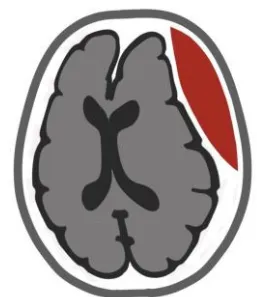
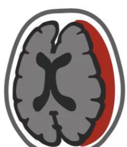
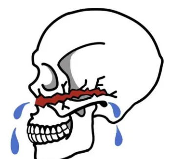
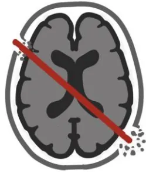
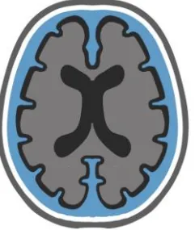
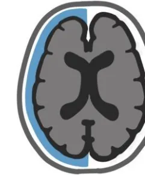

NON-INDICATION POUR TC JUGÉS DÉPASSÉS
Décision collégiale tracée:
En journée: 3 médecins seniors
PDS: 2 médecins seniors
Directives anticipées ?
PMO ?
FACTEURS DE MAUVAIS PRONOSTIC
Indice de fragilité pathologique
Mydriase bilatérale aréactive >2hDélai de prise en charge
Traitement anti-coagulantAspirine en monothérapie
Indices de fragilité
Clinical Frailty Scale ≥ 4
| Modified Frailty Index 5 ≥ 2 | |
|---|---|
| Diabète | +1 |
| HTA | +1 |
| OAP<30j | +1 |
| BPCO | +1 |
| Non autonome | +1 |
PEC chirurgicale
PEC médicale

HED
Chirurgie en urgence si:
HED d'origine artérielle associé à Glasgow ≤ 8
ET/OU Mydriase
ET/OU Volume > 30 ml
ET/OU Déviation LM > 5 mm
ET/OU Compression tronc cérébral
ET/OU Saignement actif (swirl sign)
Sinon : PEC conservatrice
✓ Au cas par cas si origine veineuse
✓ Centre doté de neurochirurgie
✓ Scanner de contrôle précoce si 1er scanner < H6 ou aggravation

HSDA
Chirurgie en urgence si:
< 65 ans OU 65-80 + indice fragilité faible (CFS<4 / MFI-5 <2)
ET
GCS ≤ 8 OU GCS ≤ 12+perte rapide ≥2 points OU HTIC
ET
épaisseur > 10 mm OU déviation LM > 5 mm
Sinon PEC conservatrice ou LATA
✓ Scanner de contrôle
En urgence si aggravation
J7-10 si nécessité reprise anti-coag
J21-30 dans les autres cas
Embarrure
Chirurgie rapide (24h) si:
Plaie complexe / contaminée
ET/OU Plaie durale / issue de LCS
ET/OU Effet de masse significatif
ET/OU Autre(s) lésion(s) neuro-chirurgicale(s)
ET/OU Préjudice esthétique majeur
Cranialisation du sinus frontal si:
défaut majeur paroi post ET/OU
brèche durale évidente ET/OU
atteinte des canaux naso-frontaux
✓ Pas d'antibiotique (SFAR 2023)
✓ Pas de prophylaxie antiépileptique

BOM
Chirurgie rapide (24h) si défaut dural majeur associé à une liquorrhée abondante
Chirurgie non urgente si liquorrhée non abondante mais réfractaire à un traitement conservateur au-delà de 7 jours
✓ Mesure préventive d'HTIC
Alitement proclive 30°, laxatifs, antitussifs, antiémétiques
✓ Vaccinations anti- pneumocoque, haemophilus et méningocoques
Dépistage radiologique de BOM
1° TDM os HR + IRM 3DT2 HR
2° myéloscanner
3° cisternographie isotopique
NIVEAU DE RECO: grade 2 avis d'experts
BOM: Brèche ostéo-méningée; BPCO: broncho-pneumopathie chronique obstructive; HED: hématome extra-dural; HSDA: hématome sous-dural aigu; OAP: œdème aigu pulmonaire (cardiogénique); IRM 3DT2 HR : IRM séquence 3DT2 haute résolution; LM: ligne médiane; PDS: permanence des soins, PEC: prise en charge; PMO: prélèvement multi-organes; TDM os mm : TDM fenêtre osseuse haute résolution;

Chirurgie en urgence:
Tout TC pénétrant avec GCS
Au cas par cas si GCS 3-4 (scores pnc)
Fermeture durale étanche
Scores pronostiques: Spin, Maritzburg
Recherche lésion vasculaire !
Collection progressive (bilatérale)
ET aggravation neurologique
ET/OU élévation de la PIC

Drainage lombaire si hydro ext
ET Perméabilité citernes de la base
ET Absence déviation LM > 10mm
ET Absence engagement amygdalien
Collection stable (unilatérale)
ET absence de signe neurologique
ET PIC normale

Traitement conservateur
Gestion DLE
*<1mois
Chirurgie en urgence si:
signes de gravité cliniques ET/OU radiologiques (déviation >5mm de la ligne médiane, compression du tronc cérébral)
Si possible par ponction:
Sinon: PEC conservatrice
**<2ans
Chirurgie en urgence:
Mauvaise tolérance clinique ET/OU HSD > 10 mm
Préférentiellement par drainage (DSDP)
Absence de reco sur utilisation de la craniectomie décompressive
Sinon: PEC conservatrice
**<2ans
Chirurgie en urgence si:
HTIC ET/OU effet de masse significatif sur le parenchyme
ET/OU hématome intra-crânien
ET/OU collection de LCS péri-encéphalique.
PEC conservatrice
NIVEAU DE RECO:
grade 2
avis d'experts
DSDP: dérivation sous-duropéritonéale; DTC: doppler transcrânien; HED: hématome extradural; HSD: hématome sous-dural; HTIC: hypertension intracrânienne; LCS: liquide cérébro-spinal; LM: ligne médiane; PEC: prise en charge; PIC: pression intracrânienne; PtiO2: pression tissulaire en oxygène